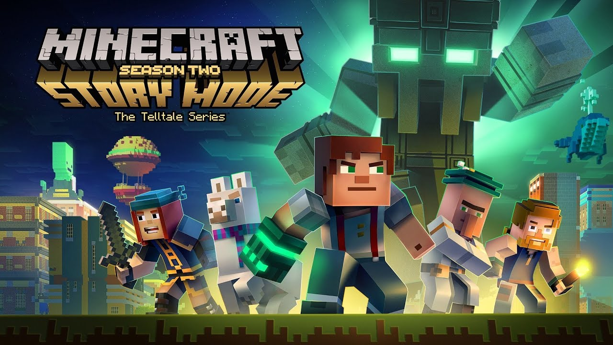
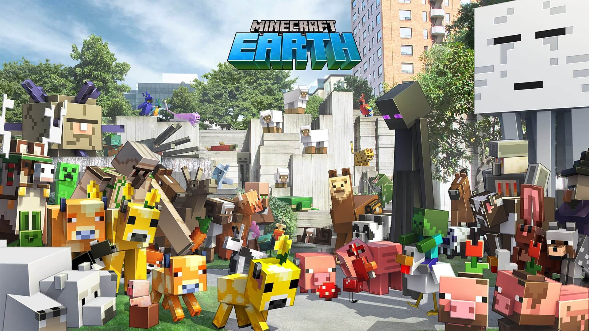

Other games
Minecraft Dungeons
Minecraft Dungeons is an action role-playing game dungeon crawler video game developed by Mojang Studios and Double Eleven and published by Xbox Game Studios. It is a spin-off of the sandbox video game Minecraft and was released for Nintendo Switch, PlayStation 4, Windows, and Xbox One on May 26, 2020. The game received mixed reviews; many deemed the game fun and charming, with praise for its visuals and music. However, its simple gameplay and use of procedural generation were met with a more mixed reception, with its short story and lack of depth criticized.Unlike Minecraft, Minecraft Dungeons does not feature an open world, nor mining or building. Instead, it is a point-and-click hack and slash-styled dungeon crawler, rendered from an isometric perspective. Players explore procedurally generated and hand crafted dungeons filled with randomly-generated monsters and also deal with traps, puzzles, bosses and finding treasure. There is no class system; players can use any weapon or armor they wish. The game includes a four-player local and online multiplayer.

Minecraft: Story Mode
Minecraft: Story Mode is an episodic point-and-click graphic adventure video game developed and published by Telltale Games, based on Mojang's sandbox video game Minecraft. Mojang assisted with the development of the game. The first five episodes were released between October 2015 through March 2016, and an additional three episodes were released as downloadable content in mid-2016. A second season consisting of five episodes was released from July through December 2017. The game follows the same episodic format as other Telltale Games titles, such as The Walking Dead, The Wolf Among Us, Tales from the Borderlands, and Game of Thrones. The story revolves around a player-created character named Jesse, originally an everyman, who later becomes a hero together with their friends. During the first four episodes, Jesse and their friends attempt to reassemble an old group of heroes known as the Order of the Stone to save the Overworld from the destructive Wither Storm. The rest of the first season follows Jesse and their friends, now the new Order of the Stone, on a new adventure after discovering a powerful artifact. In the second season, Jesse faces the powerful Admin. The game is available for Microsoft Windows, macOS, PlayStation 3, PlayStation 4, Wii U, Nintendo Switch, Xbox 360, Xbox One, Android, iOS, Apple TV, and Netflix. A retail version was released in December 2016. However, both the first and second seasons are no longer available for download due to the closure of Telltale Games in late 2018. Minecraft: Story Mode is an episodic interactive comedy-drama point-and-click graphic adventure video game. It was released as a number of episodes similar to Telltale Games' other games. Players can collect items, solve puzzles, and talk to non-player characters through conversation trees to learn about the story and determine what to do next. Decisions that the player makes affect events in both the current episode and later episodes. However, Minecraft: Story Mode is intended to be a family-friendly title, unlike Telltale's previous games, which tend to carry more mature or emotional overtones (including the death of major characters). As such, the decisions are intended to be pivotal and emotional but not to involve mature imagery or themes. Elements of crafting and building were included in the gameplay which are central to Minecraft. The game includes combat and other action sequences, carried out through both quick time events and more arcade-like controls, such as steering around debris on a road.

Minecraft Earth
Minecraft Earth was an augmented reality sandbox game developed by Mojang Studios and published by Xbox Game Studios. A spin-off of the video game Minecraft, it was first announced in May 2019, and was available on Android and iOS. The game was free-to-play, and was first released in early access on 17 October 2019. The game received its final update in January 2021 and officially shut down on 30 June 2021.Similar to Minecraft, Minecraft Earth was centered around building structures, gathering resources, crafting, and exploration. The game utilized the same Bedrock game engine as other versions of Minecraft. In "build mode", players could build augmented reality structures on "Buildplates" in collaboration with other players, then explore them in full size with "play mode". In both Build mode and Play mode, the buildplates were overlayed onto the real world using augmented reality (AR) and the built-in phone camera. Players could gather resources by collecting "tappables" in the in-game map and by completing "adventures" which may be a puzzle, a specific task, or a virtual location with hostile entities to defeat. Minecraft Earth considers physical objects such as trees and lakes so there are fewer incidents and interferences with the AR simulation. Minecraft Earth included many different kinds of in-game entities called "mobs" that are exclusive variations of the mobs in Minecraft. The game had two in-game currencies: "rubies" and "minecoins". Rubies could be earned through gameplay or purchased with real money, and could be used to purchase items that affect gameplay such as "build plates". Minecoins, which are present in all Bedrock editions of Minecraft, could only be purchased with real money and are used to purchase cosmetic items, such as texture packs and character skins.
